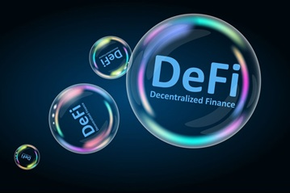

DECENTRALIZED FINANCE
Decentralized Finance (DeFi) is a financial system built on blockchain technology that removes the need for traditional intermediaries such as banks, brokers, or exchanges. Instead, it uses smart contracts — self-executing programs that run on decentralized networks like Ethereum — to enable peer-to-peer financial transactions.

DeFi allows users to lend, borrow, trade, and earn interest on digital assets in a transparent and permissionless way. Because all transactions are recorded on a public blockchain, DeFi promotes greater accessibility and reduces barriers to entry compared to traditional finance. However, it also comes with risks, including smart contract vulnerabilities, market volatility, and regulatory uncertainty.
Next Lesson